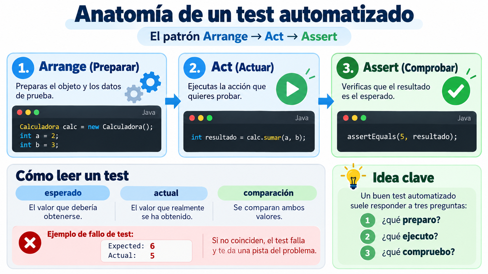
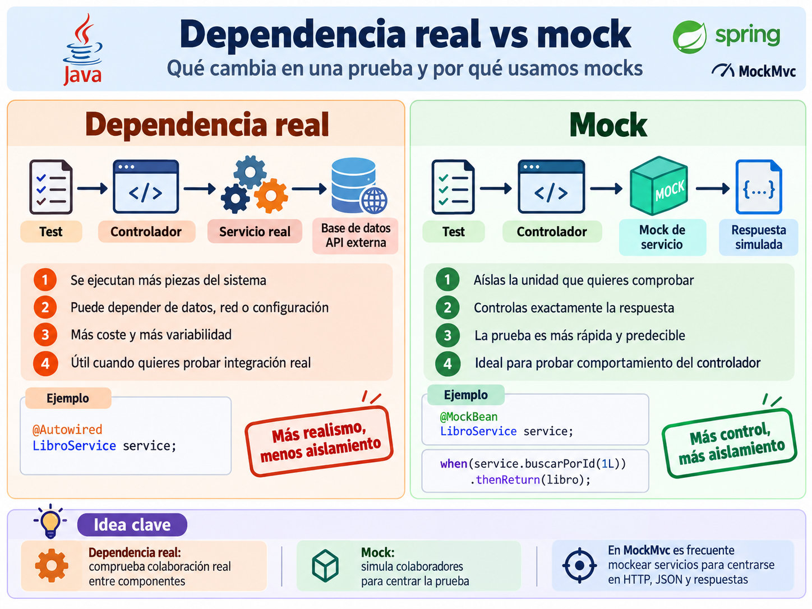
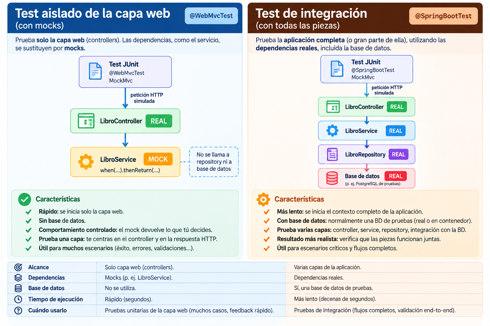
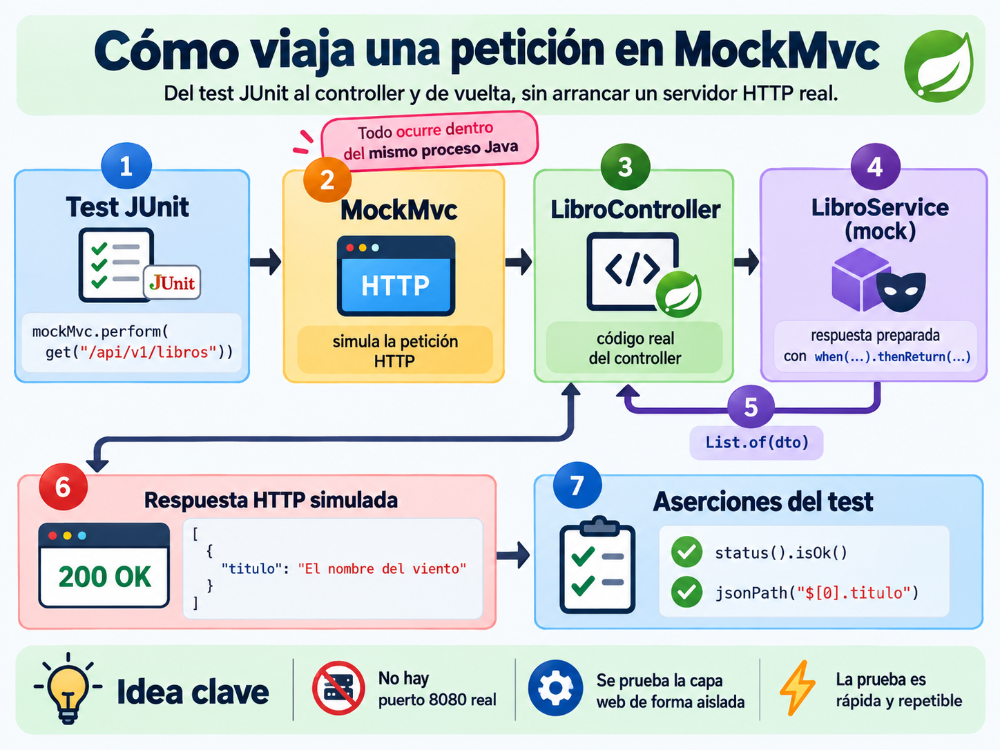
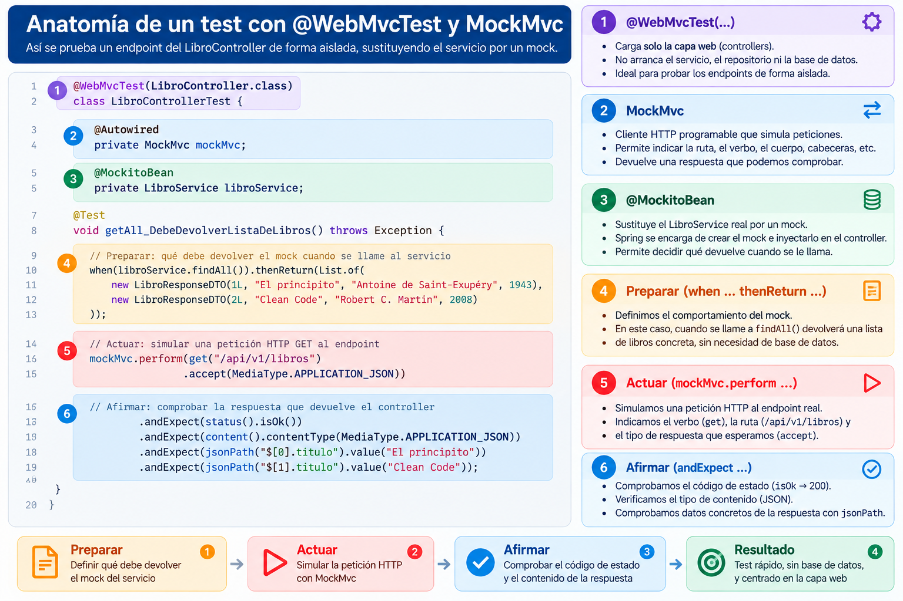
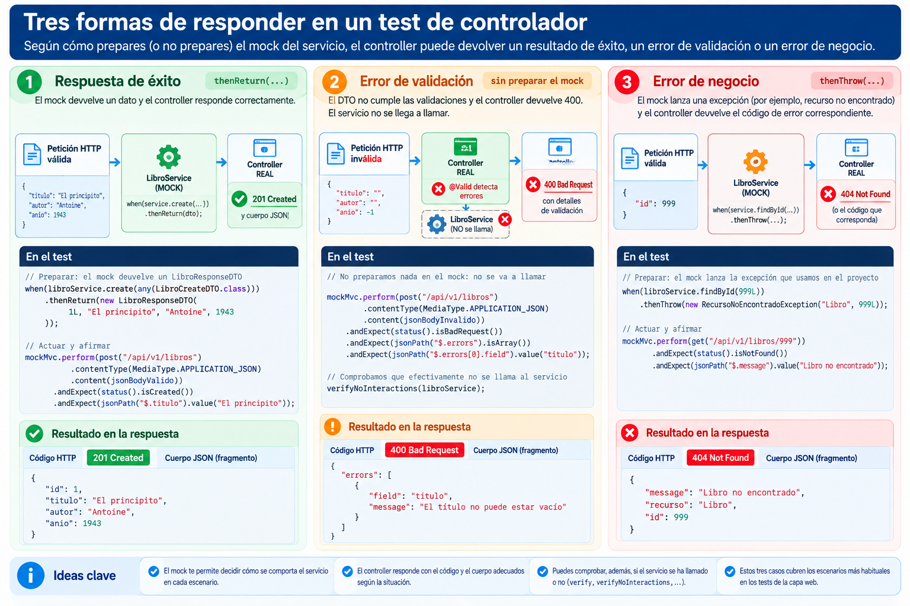

🧩 3. Probar servicios con MockMvc¶
Descarga de diapositivas
Hasta ahora has probado la API a mano: con curl (Actividad 1.1) y con Swagger UI (Actividad 1.2). Ambos funcionan, pero comparten un problema: tienes que repetir los mismos clics o comandos cada vez que quieres comprobar que todo sigue funcionando.
En esta sesión aparece un tercer cliente, uno que puede ejecutarse solo: un test automatizado.
🧪 Qué es un test automatizado¶
Imagina que LibroService ya funciona bien y hoy modificas update() para corregir un fallo. ¿Cómo sabes que ese cambio no ha roto create(), aunque no lo hayas tocado?
La alternativa manual sería volver a probar cada endpoint con Swagger UI o curl. A medida que crece el proyecto, repetir todas esas comprobaciones se vuelve cada vez más costoso.
Un test automatizado es código que realiza esas comprobaciones por ti. Lo escribes una vez y puedes ejecutarlo en segundos cada vez que cambias algo.
JUnit es la librería estándar para escribir y ejecutar tests en Java. Un test suele organizarse siguiendo el patrón preparar → actuar → afirmar (Arrange → Act → Assert).

Figura 1. Estructura habitual de un test automatizado mediante el patrón Arrange-Act-Assert. Elaboración propia.
En código:
| Java | |
|---|---|
@Test marca el método como un test que JUnit debe ejecutar. assertEquals(esperado, actual) compara lo que debería ocurrir con lo que realmente ha ocurrido.
Respeta el orden esperado → actual
Si inviertes los parámetros, el test puede seguir detectando el fallo, pero el mensaje mostrará intercambiados los valores esperado y obtenido, lo que dificulta leer el error.
Si cambias el 5 por un 6, JUnit muestra una discrepancia concreta:
La utilidad del test no es solo avisar de que algo falla: deja registrada una expectativa verificable y repetible.
🎭 Qué es un mock¶
Un test no siempre necesita ejecutar todas las piezas reales de la aplicación.
Un mock es un objeto falso que sustituye a una dependencia real y cuyo comportamiento decides tú dentro del test. En Java, con Mockito:
| Java | |
|---|---|
mock(...) crea el objeto falso. when(...).thenReturn(...) define el comportamiento que tendrá cuando reciba una llamada concreta.

Figura 2. Una dependencia real ejecuta más piezas del sistema; un mock permite aislar la unidad que se quiere probar y controlar su respuesta. Elaboración propia.
¿Por qué interesa sustituir una dependencia real? Porque permite aislar lo que quieres comprobar. Si al probar LibroController utilizases LibroService y la base de datos reales, un fallo podría provenir del controller, del service, del repository, de los datos o de la configuración.
Con un mock, el service responde exactamente como has decidido y el test puede centrarse en preguntas como:
- ¿elige el controller el código HTTP adecuado?;
- ¿genera el JSON esperado?;
- ¿reacciona correctamente ante un resultado concreto del service?
Dentro de un test de Spring se utiliza habitualmente @MockitoBean para sustituir un bean real por su mock.
Material de apoyo: JUnit y mocks desde cero
Si quieres repasar JUnit y los mocks con más calma, tienes material dedicado en Entornos de Desarrollo, Tema 3: Pruebas unitarias.
Mockear no es obligatorio. A veces precisamente quieres comprobar que varias piezas reales funcionan correctamente juntas. Esa decisión separa dos tipos de test distintos.
🆚 Test aislado vs. test de integración¶
Según el alcance que quieras comprobar, puedes plantear el test de dos formas:

Figura 3. Un test aislado sustituye dependencias para centrarse en una capa; un test de integración ejecuta varias piezas reales conjuntamente. Elaboración propia.
| Test aislado | Test de integración | |
|---|---|---|
| Qué prueba | Una parte concreta de la aplicación | Varias partes reales trabajando juntas |
| Dependencias | Se sustituyen mediante mocks | Se utilizan dependencias reales |
| Base de datos | No es necesaria | Puede utilizarse una base de datos de prueba |
| Velocidad | Muy rápido | Más lento |
En este apartado trabajarás principalmente con tests aislados de la capa web mediante @WebMvcTest: el LibroController será real y LibroService será un mock.
Un test de integración completo, en cambio, puede recorrer controller, service, repository y una base de datos real de pruebas. Más adelante utilizarás este enfoque con herramientas como Testcontainers.
🌐 MockMvc: un cliente HTTP programable¶
MockMvc es la herramienta de Spring para probar controllers REST sin arrancar un servidor HTTP real. Simula peticiones HTTP dentro del propio proceso Java y permite comprobar mediante código el estado, las cabeceras y el cuerpo de la respuesta.
Es, en esencia, otro cliente de tu API —como curl o Swagger UI—, pero programable, repetible y automatizable.

Figura 4. Recorrido de una petición MockMvc desde el test JUnit hasta el controller y de vuelta, utilizando un service mockeado. Elaboración propia.
En este recorrido:
| Text Only | |
|---|---|
MockMvc simula la recepción y el encaminamiento de la petición sin que exista un puerto 8080 real. El controller es el mismo código que se ejecuta en la aplicación y el mock del service devuelve el valor que hayas preparado.
La idea importante
No estás comprobando una llamada de red real. Estás comprobando cómo responde la capa web cuando recibe una petición concreta y sus dependencias se comportan de una forma conocida.
📖 Anatomía de un test con @WebMvcTest¶
Este es un test completo del endpoint GET /api/v1/libros:
La siguiente figura conecta cada pieza del test con su función:

Figura 5. Relación entre la configuración de @WebMvcTest, el mock del service y las fases preparar-actuar-afirmar. Elaboración propia.
Qué hace cada pieza¶
| Elemento | Función |
|---|---|
@WebMvcTest(LibroController.class) |
carga un entorno reducido para probar la capa web |
@AutoConfigureMockMvc(addFilters = false) |
configura MockMvc y desactiva los filtros de servlet |
@MockitoBean |
sustituye el service real por un mock |
when(...).thenReturn(...) |
prepara el comportamiento del mock |
mockMvc.perform(...) |
simula la petición HTTP |
.andExpect(...) |
comprueba la respuesta |
jsonPath(...) |
navega y verifica datos concretos del JSON |
addFilters = false evita que los filtros que añadirá Spring Security más adelante bloqueen estas peticiones antes de llegar al controller. Así el test sigue centrado en la respuesta que quieres comprobar.
🔀 Tres situaciones habituales en un test de controller¶
No todos los tests necesitan preparar el mock de la misma manera. Hay tres situaciones que aparecerán constantemente:

Figura 6. Tres escenarios habituales en tests de controller: valor preparado, validación previa al service y excepción preparada en el mock. Elaboración propia.
1. El mock devuelve un valor: thenReturn¶
En un caso de éxito puedes decidir qué devuelve el service:
Después actúas con MockMvc y verificas la respuesta:
| Java | |
|---|---|
2. La validación falla antes de llamar al mock¶
Este test no necesita when(...):
La validación de @Valid se produce antes de que el controller llegue a llamar a libroService.create(...). Si el DTO no supera sus restricciones, Spring responde con 400 Bad Request y el service no necesita intervenir.
En este momento basta con comprobar el código de estado. Cuando la aplicación disponga de un formato de error estable, podrás añadir comprobaciones jsonPath(...) sobre ese cuerpo.
3. El mock lanza una excepción: thenThrow¶
Para simular un recurso no encontrado:
| Java | |
|---|---|
thenThrow(...) no prepara un valor de retorno: prepara el fallo que debe producir la dependencia cuando se invoque de esa manera.
🔗 ¿Y el test de integración completo?¶
Existe otro nivel de prueba en el que no se sustituye el service por un mock. El test puede levantar varias capas reales e incluso una base de datos temporal mediante Testcontainers.
Ese enfoque permite comprobar la colaboración real entre componentes, pero también es más costoso y lento. Lo trabajarás con más profundidad en Acceso a Datos; aquí basta con distinguir los dos niveles:
| Text Only | |
|---|---|
🎯 Lo que viene¶
Tu proyecto ya tiene el CRUD completo de Videojuego y de Estudio, documentado con @ApiResponses en la Actividad 1.2.
En la Actividad 1.3 no construirás endpoints nuevos: escribirás tests MockMvc que comprueben mediante código que los estados que has documentado (200, 201, 400, 404...) son realmente los que devuelve tu API.
La Actividad 1.4 cerrará el tema con dos piezas adicionales: comprobar cuánto tarda la API en atender varias peticiones y utilizar Actuator.
✅ Ideas clave¶
Abrir resumen
- Un test automatizado comprueba comportamiento de forma repetible y suele seguir el patrón preparar → actuar → afirmar.
- Un mock sustituye una dependencia real por un objeto cuyo comportamiento controla el propio test.
- Un test aislado se centra en una parte de la aplicación; un test de integración ejecuta varias piezas reales conjuntamente.
- MockMvc simula peticiones HTTP contra los controllers sin arrancar un servidor HTTP real.
@WebMvcTestcarga la capa web,@MockitoBeansustituye dependencias ymockMvc.perform(...).andExpect(...)permite actuar y afirmar sobre la respuesta.when(...).thenReturn(...)prepara un valor;thenThrow(...)prepara una excepción.- No todos los tests necesitan preparar el mock:
@Validpuede detener una petición antes de que el service llegue a ejecutarse.